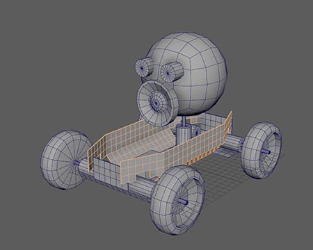
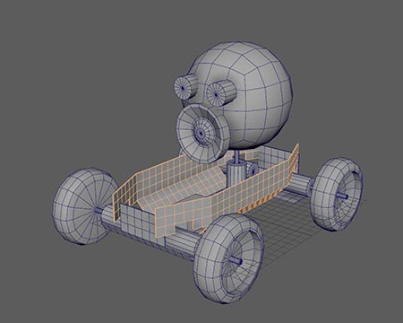
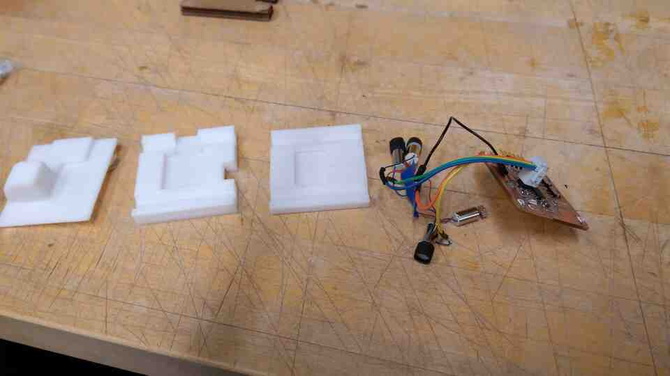

To make the chassis/body out of cardboard and laser cutting, I made some tests in Maya.
And an unfolding idea for cheap fabrication
CAD files
Maya unfold testUnfolded curves (be mindful of overlapping lines)
I made a rover that is afraid of darkness.
To make the chassis/body out of cardboard and laser cutting, I made some tests in Maya.
And an unfolding idea for cheap fabrication
Using the laser cutter, I created the folding chassis prototypes out of cardboard, and played around with my press fit kit from week 1. During laser cutting, I noticed some overlapping lines, which almost became a fire hazard. I figured out that the when the 3d model is unfolded, some lines overlap.
I also combined kit parts with the folding prototypes for some design exploration.
After the ideation phase of molding & casting week, I decided to make the rover smaller for added cuteness, and easier production to (maybe) make more than a single one.
So far I have:
I still need:
What works:
What does not work:
Questions to resolve:
What happens when:
What I learned:
This week, I built a prototype with 4 phototransistors, 4 vibromotors, an FTDI serial connection and an LED, around an ATTiny1614.
I placed transistors on the corners, creating a 2x2 grid for light readings.

My first milling attempt was a little rough towards one side due to poor adhesion, yet it was functional after a light pass with sandpaper. I decided to recycle the first attempt as a platform to solder vibro motors, and build a new board just to be safe.
I wrote a basic software for the board, that reads analogue signals from each sensor, multiplies it by a value, and sends it as an analog/pwm signal to the corresponding vibromotor.
After a while vibromotors started ripping of the solder joints, so I constrained them.
I hot glued vibromotors to a cardboard chassis, and soldered their grounds to a piece of adhesive copper.
The rover does freak out in the dark, and somewhat seeks light. However, the code does not yet include the vector representation, and the rover ends up rotating right. I need to calibrate sensors in a balance state.
I replaced vibromotor weights with 3d printed wheels.

PLA did not have enough grip to move the rover. I used heat shrink tubing as tires.
Now the wheels either do burnouts, or stall. My conclusion is that the vibro motors have too little torque and too much speed.
A potential solution would be to hack servo motor gears. I decided to go back to vibromotors to conserve time.
Controlling direction on a vibrating robot turned out to be a challenge. After experimenting with code, different surfaces, and center of gravity for hours my cardboard chassis finally gave up.
I designed, modeled, and 3d printed a three part body for added stability. The body is a square shape with phototransistors on each corner. I kept the bottom flat, in order to experiment with different designs for legs.
I also discovered bristle bots, which typically are simpler versions of my project with just a battery and one vibromotor connected to a tootbrush head. However, I discovered one video where two brushes are used like tank threads, wirelessly connected to a gamepad resulting in somewhat controllable movement.
I tried different approaches for 3d printing legs of brushes, ending up modifying a design with curved legs that proved to be the most controllable.
By running vibromotors at different speeds (with PWM), and in different configurations, I can make the bot:
The combinations are quite unintuitive. Possibly because the center of gravity is in an awkward position, and there are performance differences among vibro motors.
I will update my code to include a state machine with different motor combinations for steering.
I need a function that takes 2 dimensional vectors which I acquire from signal difference among four phototransistors on each corner of the rover. The function should switch states based on thresholds in vector axes.
What I would prefer is a 'fuzzy' state machine, where to rover could be in between states for more organic motion (this happens a lot in character animation).
My current software has a primitive state machine that steers the rover based on lateral difference (vX) between the sensors.
Light intensity has an inverse relationship to power transmitted to vibromotors.
Result is a rover that steers towards light and calms down when under light, yet freaks out in darkness.
Next step is to utilize longtitudal light difference (vZ) to create a smarter mode of navigation.
In parallel to the small vibromotor rover, I developed a larger one with geared DC motors.
One approach was to connect motors to a cardboard chassis with cables routed in the grooves. I had to abandon this idea temporarily due to material and time constraints.
Instead, I used LEGO parts and bolts to put together a variable stiffness development chassis.
Using my boards from networking week, I connected an ESP32 to my main ATTiny1614 board, which then connects directly to the motors. The motors are rated for 4.5 volts, however I can run them two at a time from a 3.5 Volt LiPo battery, and even 2 volts from a power supply. However, when I connect motors directly to the microcontroller, I get no movement.
Checking with the multimeter, I noticed no resistence between the ground and power pins on the motors.
I will return to this project on a later spiral. For the time being my focus is on completing and documenting the small version.
Thanks:
Special Thanks: